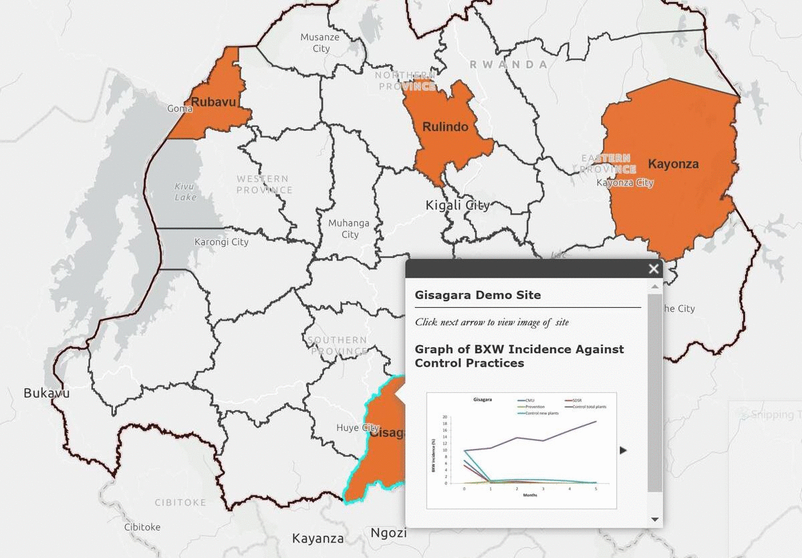

Citizen Science and ICT for advancing the prevention and control of Banana Xanthomonas Wilt
In an effort to the help smallholder farmers fight banana disease, the ICT4BXW Project Team developed ICT-based tools for banana agronomy guidelines and early warning system to control Banana Xanthomonas Wilt (BXW).
The broader goal of this project is to leverage citizen science and ICT to prevent and control BXW in East and Central Africa, starting with Rwanda. The digital tools that have been deployed (including BXW Android App, USSD-based Agronomic Extension, and IVR-Based Remote Training) are gradually improving the reality of farmers but providing decision-support for banana management and sustainable production.

Banana: An Indispensable Crop
Banana in Rwanda is a key crop in the livelihoods of smallholder farmers and occupying around a quarter of arable land.
Banana is an important part of peoples’ daily diet and providing income and food security to millions of smallholder households and it plays an important role in the social life of the populations in the African Great Lakes Region.
The Problem
BXW-A Threat to Banana Production
This staple crop (Banana) is threatened by Banana Xanthomonas Wilt (BXW). BXW is a bacterial disease commonly spread from plantation to plantation by insects and infected cutting tools and has spread throughout the region resulting in production losses both at farm and national level. Read more about the disease in the region as discussed by McCampbell et al. here. Tracking the potential outspread of the disease in order to set up prevention policies has been challenging since it appeared in the region.

Lack of Effective Control
Lack of knowledge on sustainable control practices to counter the disease spread is a major problem in the fight against BXW. The project is reinforcing use of sustainable control practices through the use of ICT tools. An effective management approach has been available for a number of years, yet BXW continues to be the scourge of banana farmers across the country.

Lack of Surveillance System
A surveillance system is required for effective control and eventual elimination of the disease for improved livelihoods of the citizens.

Multiplatform Delivery of Digital Tools

BXW App It is an android-based smartphone application that is available and accessible for download in google play store. The App provides well illustrated content (Including pictures, texts, audios and videos) that guides users to prevent and control BXW, identify BXW infected banana plants, and access proven agronomic information for banana farming.

WhatApp-based Chatbot A personalized, interactive WhatsApp chatbot provides Farmer Promoters and Farmers with practical guidance on digitizing BXW disease diagnostic, prevention and management, and equip them with skills for advanced management of their banana plantations. Content can be accessed by sending the word “Kirabiranya”, a Kinyarwanda name for BXW disease, to WhatsApp +250 790 139 375.

8-4-5 service This is a system that provides extension information and banana agronomic advice to farmers through a proprietary 8-4-5 service platform that was developed by project partner (Viamo), hosted by a mobile network provider. The service allows for active and passive access by all farmers, either through smartphone or basic phone.

Remote training The project developed and deployed extension curriculum using the Interactive Voice Response (IVR) technology, and has remotely trained over 1,000 Farmer Promoters on best banana agronomic practices, digital extension delivery, and BXW control, with 98% completion rate achieved over a 4-week period of delivery.

BEYOND DIGITAL: REACHING BANANA FARMERS WITH INNOVATIVE CONTENT
Non-digital decision-support resources (infographic booklets, brochures, farmers’ calendar and Posters) can be easily accessed by both Farmer Promoters and Farmers at their convenience. These showcase banana agronomic advices, symptoms of BXW, and how to prevent or control BXW in farmers’ fields. So far, 2,500 posters and 6,500 booklets have been printed and distributed nationally, in the local language with 98% of users citing their usefulness.

EARLY WARNING ALERTS FOR PROACTIVE BXW CONTROL
The deployment of the BXW App has enabled the delivery of early warning alerts on BXW risk, directly to Farmers’ mobile phones. Based on quarterly pooling of the data, RAB is duly equipped to assess the severity and occurrence of new BXW disease incidence across various districts of Rwanda. The alerts inform farmers about the severity of BXW disease in their area, provide management and control measures, and best agronomic practices to apply in their banana fields to avoid potential losses.
Testimonials
Major Project Insights

Social Networks Analysis
ICT4BXW project adopts Social network analysis (SNA) approach to detect and interpret patterns of social linkages among actors, and to identify the potential entry point(s) for improved adoption of the target innovation (tool and system). Read more about Social network analysis here, Hermans et al.
This approach suggests that farmers cooperate, consult and exchange in regard to adoption of new technologies instead of acting individually. By this, the project will develop a virtual communication platform to provide real time data on the geographical occurrence of BXW.

Co-Creation of Surveillance Tool
A step-wise Participatory Inclusive Technology Development (PITD) process was adopted to co-develop a surveillance tool that offers rich content for end-users.
The first PITD provided the required elements for prototyping (the key structure and initial content) of the BXW tool and platform, while the next PITD focused on testing the mock-up version of the tool with the farmer promoters.

Real-Time Surveillance in Action
USER JOURNEY
In order to deploy a BXW surveillance tool and system that fully captures contextual realities and user-preferences, the project follows a Participatory and inclusive Technology Design (PITD) approach to design and test the envisioned tool.
THE BXW APP
Effective communication is hinged on clarity and context richness of the app content. This app has well-illustrated content through pictures, audios and videos. The data from the app can be accessed and managed through the dashboard to enable [near] real-time monitoring of the disease spread and other patterns and provide basis for effective actions by decision makers.

Scaling Readiness Workshop
With the Phase-I achievements of the project having translated to access and impact among Rwandan banana farmers, insights and ideas have been generated and are expected to guide the direction for the anticipated Phase-II of the project.
This current phase is focussed on scaling the project innovations and products through the Scaling Readiness approach with collaborators from Viamo, Arifu and MangoTree/Linking pin.
A virtual/Physical workshop was held in May/ June 2021 for planning, cordinating and strategizing of the nationwide scaling activities in Rwanda.

Multiplatform Delivery of Co-developed Tools
Multiplatform delivery of co-developed tools for national control and prevention of Banana Xanthomonas Wilt (BXW) in Rwanda is the major goal of the project's phase II. The digital an non-digital tools for control and surveillance of BXW through our partners are listed below
- Agronomy & BXW Control (ABC) Toolkit for banana farmers, by Linking pin/ Mango Tree
- Interactive Chatbot: Smartphone-based digital surveillance tool for BXW prevention and control, by Arifu.
- USSD/IVR/SMS: Stepwise diagnostic tool and decision support for support for effective BXW management, by Viamo.
- Remote training innovation for farmer promoters, by Viamo.
- Banana management, by RAB.

Scaling Champions/ Enablers Selected and Trained
This phase aims to reach more than 252,000 farmers in Rwanda. 900 Farmer promotors will be trained and provided with smartphones. Out of the 900, 150 farmer promotors from 25 districts, who are our scaling champions (selected via SNR through IAMO team), will, in return, share the skills with their peer farmers in their respective villages.
A training was organised to empower the selected scaling champions on the use of BXW App (Android application) and its functionalities, and train them on different digital tools (USSD/IVR/SMS/chart-boot) that are used in agriculture in Rwanda to support farmers to modernize their farming activities.
The training was successfully completed in October 2021

Technical Workshop: Engage Beneficiaries and Decision Makers
A technical workshop was held in Kigali on 24th March 2022 to present the project digital tools to the ministry of agriculture in Rwanda and discuss strengthening of their sustainability.
The workshop aimed to;
- Foster in-depth understanding of the co-developed innovations among stakeholders.
- Review the minimum requirements for tool functionality.
- Map and agree on plans for sustainability and ownership of developed innovations.

Analogue Materials Disseminated Countrywide
The project introduced the non-digital materials, which are easily accessed by both Farmer Promoters and Farmers in various districts of Rwanda. Those materials include booklets, brochures, and posters that portray banana agronomic advices and how to prevent BXW in fields.
International Institute of Tropical Agriculture (IITA), Rwanda Agriculture, and Animal Resources Development Board (RAB) developed and disseminated the analogue materials across the country to scaling champions (Farmer Promoters), to help them deliver information on banana agronomy with visible and tangible examples as displayed on posters and booklets.

Digital e-Extension
The project team collaborated with Viamo to deliver remote training through Interactive Voice Response (IVR) with a focus on the (BXW) disease and best practices for banana agronomy. The cohort of Scaling Champions (SCs) and Scaling Enablers (SEs)» were invited to the modules. Over a period of three months, a total of 1094 SCs and SEs completed the training with major outcomes indicating successful capacity development for digital extension delivery.
The training was conducted through their mobile phones, using pre-recorded audio lessons. The goal was to reach banana farmers and farmer promoters across the country, covering all the 30 districts, to foster timely surveillance and control of BXW disease in their farm fields (and villages) while providing access to agronomic information for better management of banana farms.

Rwanda Agricultural Show Participation
The team participated in the Rwanda Agricultural Exhibition, organised by the Rwanda Agricultural Board, to showcase the CGIAR contribution to Rwandan agricultural transformation.

845 Service: Banana Agronomy Content Review
Workshop held between RAB, IITA and Viamo, to discuss and review banana agro-content and how to encourage farmers to engage with the service.

WhatsApp-based Chatbot
WhatsApp-based chatbot launched on 4th Nov, 2022 to fight against Banana Xanthomonas Wilt (BXW) disease in Rwanda.
Acess via: https://bit.ly/3hjRIV5
As part of the ICT4BXW project scaling, RAB and IITA have partnered with Arifu to provide the BXW App through a whatsApp-based chatbot to enable farmers to diagnose and access banana agronomy content.

Annual Planning Meeting
the ICT4BXW project stakeholders held a virtual/physical meeting where they discussed progress & next steps for the digital tools developed to combat banana disease.

Deploying Best-Fit Control Strategy
Previously, BXW has been being managed via different strategies including complete field clearing (CFU), complete mat uproot (CMU),Single Disease Stem Removal (SDSR) and even prevention. Some of these methods are considered to be ineffective and uneconomical, leading to major losses for the farmers. A survey showed how these methods have been applied in the past; CMU (53%), CFU (16%), SDSR (28%) while 3% did not use any of the methods.
A ground level evidence for BXW control through Single Disease Stem Removal (SDSR) trials has been established. Consistent field studies in all districts of study, show decreasing BXW incidence level over the 5 months with the SDSR method compared to the other control plots.
This video provides more information on the project. A policy brief was also developed and adapted by the government of Rwanda. More information on the methodology, analysis and results can be found in Blomme et al. here.

The Gif below shows study sites locations ( Rubavu, Rulindo, Kayonza and Gisagara districts), for providing ground level evidence for BXW control under Rwandan agro-ecological conditions.
Contact Us
ICT4BXW project is a collaboration between the International Institute of Tropical Agriculture (IITA), Bioversity International, the Rwanda Agricultural and Animal Resources Development Board (RAB) and the Leibniz Institute of Agricultural Development in Transition Economies (IAMO).
This work received financial support from the German Federal Ministry for Economic Cooperation and Development (BMZ), commissioned and administered through the Deutsche Gesellschaft für Internationale Zusammenarbeit (GIZ) Fund for International Agricultural Research (FIA).
Associated Scientific Publications


Led by Funded by
Location:
RAB (Banana Program) KK 18 Ave, Kigali, Rwanda
IITA Office KG 563 ST #7 Kigali, Rwanda
Email:
iita.rab.bxw@gmail.com
Call:
+2507